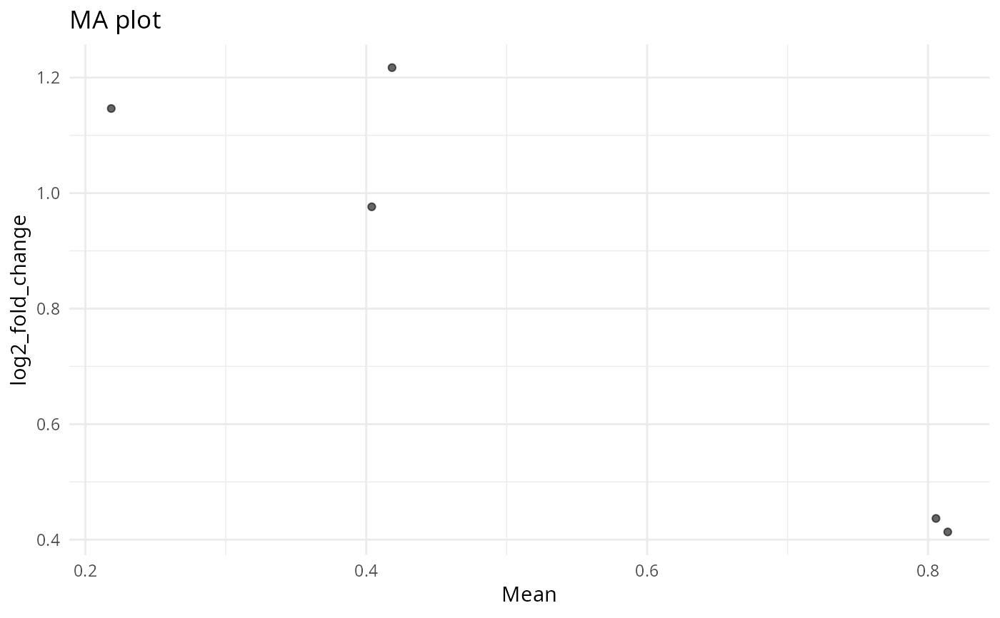

R/generate_plots.R
plot_ma_expression.RdWrapper around `plot_ma(..., type = "expression")` that accepts a `SummarizedExperiment` or precomputed fold-change `data.frame`.
plot_ma_expression(
x,
se,
samples = NULL,
control = NULL,
fc_method = "median",
pseudocount = 0,
sig_alpha = 0.05,
x_label = NULL,
y_label = NULL,
title = NULL,
...
)Data.frame from `calculate_difference()`.
A `SummarizedExperiment` or data.frame supplying readcounts or precomputed fold changes.
Optional sample grouping vector (passed to `plot_ma`).
Control level name (passed to `plot_ma`).
Aggregation method for fold-change calculation (passed to `plot_ma`).
Pseudocount added when computing log ratios (passed to `plot_ma`).
Numeric significance threshold for adjusted p-values (default: 0.05).
Optional x-axis label passed to `plot_ma`.
Optional y-axis label passed to `plot_ma`.
Optional plot title passed to `plot_ma`.
Additional arguments passed to `plot_ma()`.
A `ggplot2` object representing the MA plot.
x <- data.frame(genes = paste0("g", seq_len(5)), mean = runif(5))
fc <- data.frame(genes = paste0("g", seq_len(5)), log2_fold_change = rnorm(5))
plot_ma_expression(x, se = fc)
